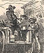

){kind=link}

|
BY and by I was smitten with the silver fever. "Prospecting parties" were leaving for the mountains every day, and discovering and taking possesion of rich silver-bearing lodes and ledges of quartz. Plainly this was the road to fortune. The great "Gould and Curry" mine was held at three or four hundred dollars a foot when we arrived; but in two months it had sprung up to eight hundred. The "Ophir" had been worth only a mere trifle, a year gone by, and now it was selling at nearly four thousand dollars a foot! Not a mine could be named that had not experienced an astonishing advance in value within a short time. Everybody was talking about these marvels. Go where you would, you heard nothing else, from morning till far into the night. Tom So-and-So had sold out of the 'Amanda Smith" for $40,000--hadn't a cent when he "took up" the ledge six months ago. John Jones had sold half his interest in the "Bald Eagle and Mary Ann" for $65,000, gold coin, and gone to the States for his family. The widow Brewster had "struck it rich" in the "Golden Fleece" and sold ten feet for $18,000--hadn't money enough to buy a crape bonnet when Sing-Sing Tommy killed her husband at Baldy Johnson's wake last spring. The "Last Chance" had found a "clay casing" and knew they were "right on the ledge"--consequence, "feet" that went begging yesterday were worth a brick house apiece to-day, and seedy owners who could not get trusted for a drink at any bar in the country yesterday were roaring drunk on champagne to-day and had hosts of warm personal friends in a town where they had forgotten how to bow or shake hands from long-continued want of practice. Johnny Morgan, a common loafer, had gone to sleep in the gutter and waked up worth a hundred thousand dollars, in consequence of the decision in the "Lady Franklin and Rough and Ready" lawsuit. And so on--day in and day out the talk pelted our ears and the excitement waxed hotter and hotter around us.  I would have been more or less than human if I had not gone mad like the rest. Cart-loads of solid silver bricks, as large as pigs of lead, were arriving from the mills every day, and such sights as that gave substance to the wild talk about me. I succumbed and grew as frenzied as the craziest. |